Primers • Loss Functions
- Overview
- Multi-Class Classification
- Multi-Label Classification
- Classification Loss functions
- Regression Loss Functions
- Ranking Loss
- Contrastive Loss
- Losses in Deep Learning-based Reinforcement Learning
- Further Reading
- References
- Citation
Overview
- Loss functions, or cost/error functions, are indispensable in machine learning. They calculate the distance between a model’s predicted output and the expected (or true) output. By providing a measurement of how well a model is capturing patterns in the dataset, they serve as a critical feedback mechanism for the learning algorithm. Broadly speaking, if the predictions are largely inaccurate, the loss value will be high; if they are closer to the actual results, the loss value will be low.
- Different machine learning tasks often require distinct loss functions, each suited to the specific nature of the problem at hand. We’ll begin by discussing the typical tasks involved in machine learning and then delve into the commonly employed loss functions in each context. The loss functions are divided into those used for classification and regression tasks.
- The following figure summarizes a few common loss functions and their use cases image source: AiEdge.io.
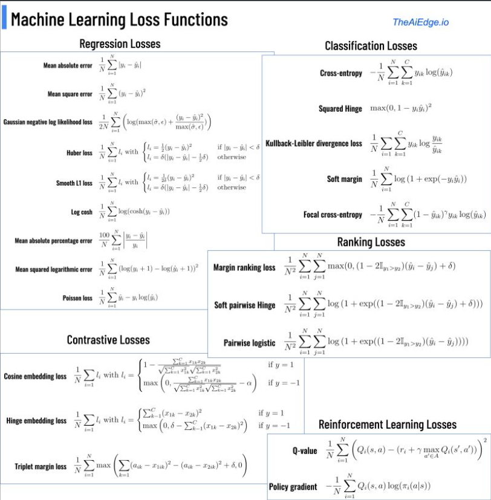
- To get a quick refresher on activation functions such as softmax and sigmoid, check out the Activations primer here.
- In this article, we will explore the distinct categories of tasks in machine learning and subsequently delve into the corresponding loss functions utilized to optimize these tasks.
Multi-Class Classification
- Multi-class classification is sometimes referred to as a “one-of-many” classification. In this scenario, each instance or sample can belong exclusively to one of \(C\) classes. The model generates \(C\) output neurons, which can be consolidated into a scores vector \(s\), then fed as input to the softmax activation function. The ground truth, or target vector \(t\), is a one-hot vector—this means that it features a positive class (1) and \(C-1\) negative classes (0).
- Multi-class classification is treated as a singular problem of classifying samples into one of \(C\) classes.
-
An appropriate loss function for multi-class classification is the categorical cross-entropy loss, computed as follows:
\[L = \frac{-1}{N * Σ Σ t_ij * log(s_ij)}\]- where \(N\) is the total number of samples, \(t_{ij}\) denotes the true label (0 or 1), and \(s_{ij}\) is the predicted score for each class.
Multi-Label Classification
- In multi-label classification, each sample can belong to more than one class, contrasting with multi-class classification where each sample belongs to a single class. The model still outputs \(C\) neurons, similar to multi-class classification. However, the target vector \(t\) can contain more than one positive class, resulting in a multi-hot vector with \(C\) dimensionality. This differs from the one-hot vector utilized in multi-class classification, which contains a single positive class.
- This task is interpreted as \(C\) independent binary classification problems, each deciding whether a sample belongs to a specific class or not. The binary cross-entropy loss, averaged over all classes, is commonly used for this scenario.
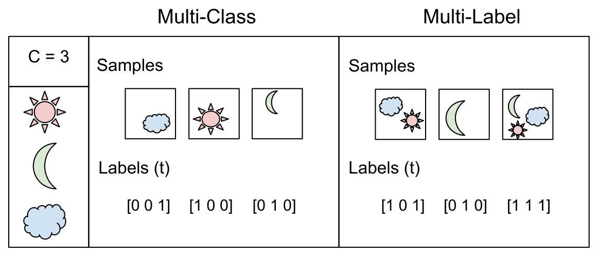
- The image above (source) does a great job at illustrating the differences from multi-class and multi-label.
Classification Loss functions
- Below, we will look at a few classification loss functions.
Cross-Entropy Loss function
- Cross-entropy loss or Negative Log Loss (NLL) measures the performance of a classification model whose output is a probability value between 0 and 1.
- Cross-entropy loss increases as the predicted probability value moves further away from the actual label. A perfect model would have a loss of 0 because the predicted value would match the actual value.
- For binary classification problems, binary cross-entropy is used, and for multi-class classification problems, categorical cross-entropy is used.
- The cross-entropy loss calculates the error between the model’s predicted probabilities (from the softmax or sigmoid function) and the actual class labels (one-hot encoded in case of multi-class).
While cross-entropy seeks to maximize the predicted probability distribution to match the target/label distribution, i.e., maximize the negative log likelihood. However, since loss functions are typically minimized (rather than maximized, in which case they’re referred to as utility functions), we end up with a negative sign in the front of the summation to delineate minimizing the negative log likelihood.
- Let’s look at the formula for cross-entropy loss:
- For a binary classification problem where the number of classes \(M\) equals 2:
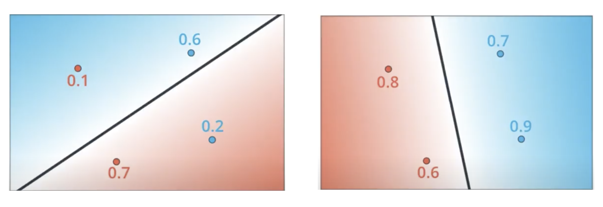
- where,
- \(M\): The number of classes or output we want to predict.
- \(y\): (One-hot) ground truth label (0 or 1).
- \(p\): Predicted probability.
- Note that some literature in the field denotes the prediction as \(\hat{y}\) so the same equation then becomes:
- Below we see the formula for when our number of classes \(M\) is greater than 2.
- where,
- \(M\): The number of classes or output we want to predict.
- \(y_{o, c}\): One-hot ground truth label serving as a binary indicator if the class \(c\) is the correct classification for observation \(o\) (0 for incorrect classes \(c \neq o\), 1 for the correct class \(c = o\)).
- \(p\): Predicted probability for observation \(o\) with class \(c\) being the correct classification.
- Effectively, the cross-entropy loss “pulls” the predicted probability of the correct class towards 1 during training. This is accomplished by calculating gradients of the loss function w.r.t. the model’s weights; with the model’s sigmoid/softmax output (in case of binary/multiclass classification) serving as the prediction (i.e., the pre-argmax output is utilized since argmax is not differentiable).
-
Chris Olah’s Visual Information Theory post is a good intro to the topic and motivates the concept of cross entropy pretty well.
- We will look at the many flavors of cross-entropy loss below.
Binary cross-entropy loss
- In machine learning, binary classification is a supervised learning algorithm that categorizes new observations into one of two classes. The model has a single output (which is fed as input to the sigmoid function) in the range [0,1]. If the output > 0.5, then class 1 (positive class), else 0 (negative class).
- Binary cross-entropy loss, also known as sigmoid cross-entropy loss, is the sigmoid activation with a cross entropy loss as shown below (source).

- For binary classification, the binary cross-entropy loss can be computed as:
- Typical binary classification problems include:
- Medical testing to determine if a patient has certain disease or not;
- Quality control in industry, deciding whether a specification has been met;
- In information retrieval, deciding whether a page should be in the result set of a search or not.
Focal Loss
- Introduced by Facebook AI in Focal Loss for Dense Object Detection for object detection tasks, it is a variant of Cross Entropy Loss designed to address class imbalance problem in a classification task.
- The main idea behind Focal Loss is to give more weight to harder, easily misclassified examples, and less weight to easier examples. It adds a modulating factor to the standard cross entropy criterion, with the aim of focusing on the misclassified instances.
- One of the most common choices when training deep neural networks for object detection and classification problems in general.
- Focal loss applies a modulating term to the cross entropy loss in order to focus learning on hard misclassified examples. It is a dynamically scaled cross entropy loss, where the scaling factor decays to zero as confidence in the correct class increases.
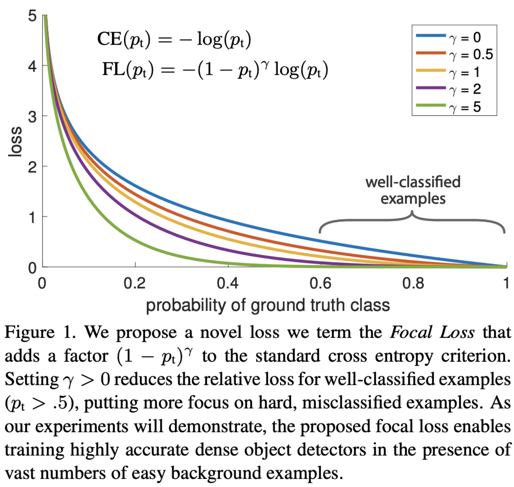
Categorical Cross Entropy
- Categorical Cross-Entropy loss is also referred to as Softmax Loss, but let’s make a quick clarification here on how it is different from Softmax activation. Softmax Loss is a Softmax activation plus a Cross Entropy loss as displayed below (source).
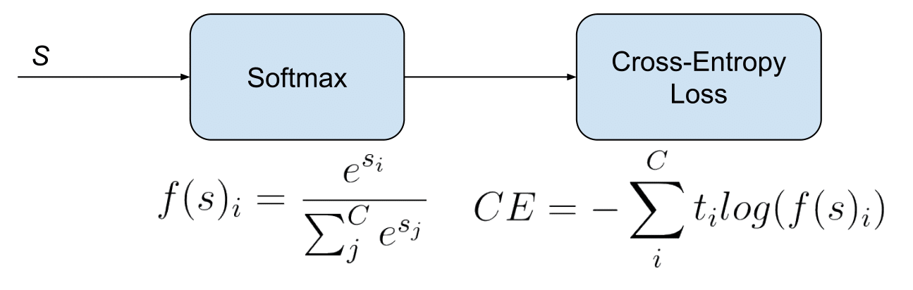
- It is used for multi-class classification tasks where each instance can belong to only one class out of multiple classes. It is a direct application of cross entropy loss in a multi-class classification setting.
Kullback–Leibler (KL) Divergence
- The Kullback–Leibler divergence, denoted \(D_{\text{KL}}(P\mid\mid Q)\), is a type of statistical distance: a measure of how one probability distribution \(P\) is different from a second, reference probability distribution \(Q\).
- A simple interpretation of the KL divergence of \(P\) from \(Q\) is the expected excess surprise from using \(Q\) as a model when the actual distribution is \(P\).
- Note that KL divergence is commonly used as a difference (loss) and not a metric since it is not symmetric in the two distributions, i.e., \(D_{\mathrm{KL}}(P \| Q) \neq D_{\mathrm{KL}}(Q \| P)\).
Intuition
- The following section has been contributed by Garvit Suri and Sanskar Soni.
- While it’s common to use the KL Divergence loss function while training ChatGPT with RLHF or teaching a smaller model to imitate a larger one during Knowledge Distillation, it’s not always the easiest concept to grasp.
- That is why, in this blog, I intend to explain the intuition behind KL divergence without using any mathematical notations.
- But before diving immediately into deciphering KL divergence, we first need to grasp two fundamental concepts from Information Theory: information and entropy. These two can be jointly understood with this – the less probable an event, the more surprising it is, and therefore, the more entropy it contains, providing more information to gain from it.
- Simply, if I tell you a fact you already knew or had an idea about, you gained no information from our conversation as there was no “surprise” and, correspondingly, our exchange had little entropy.
- Now let’s clarify the mystery surrounding KL Divergence using Lego blocks.
- Imagine: two friends, \(A\) and \(B\), both have a box of Lego blocks. \(A\)’s box contains a variety of blocks in diverse colours and sizes. In contrast, \(B\)’s box only contains red and yellow blocks, all of the same size.
- Here, \(A\)’s box has a higher entropy, owing to the unpredictability every time you reach inside. On the other hand, \(B\)’s box contains less entropy with only two possible outcomes whenever a block is drawn.
- Now, we let \(B\) play with \(A\)’s box. \(B\)’s already accustomed to her box so she has a certain expectation as to which block she’d pull out. But \(A\)’s box is much less predictable for her. Every time she pulls out a new block, it’s a surprise!
- This difference between \(B\)’s expectations from pulling a block out of the box (based on her box) and what happens when she pulls a block out of \(A\)’s box (the actual “surprise”) can be visualized as KL Divergence.
- KL Divergence compares the “surprisingness” (entropy) of \(B\)’s box and \(A\)’s box and tells us how different the two boxes are in terms of their predictability or the surprise they offer.
- Intuitively, the greater the KL Divergence, the more divergent your expectations are from the ground truth.
- Coming back from the world of abstractions, here are some quick pointers every AI enthusiast should know about KL-Divergence:
- Formally, KL Divergence measures how much a probability distribution \(Q\) diverges from a true probability distribution \(P\).
- Often, KL Divergence is confused with Cross-Entropy in machine learning. However coincidentally, these terms point to the same value while classifying because the entropy of the true distribution is zero as the class labels are one-hot vectors. (\(A\) data point belongs to the class indicated by the ‘1’ in the vector. It doesn’t have any probability of belonging to any other class. So in this case, the entropy, or the measure of uncertainty, is 0 which can be verified mathematically as well.)
- KL divergence is used when both the predicted and true values are probability distributions, whereas cross-entropy is used when the actual values are one-hot encoded labels, not probability distributions.
Mathematical Treatment
-
For discrete probability distributions \(P\) and \(Q\) defined on the same probability space, \(\mathcal{X}\), the relative entropy from \(Q\) to \(P\) is defined to be:
\[D_{\mathrm{KL}}(P \| Q)=\sum_{x \in \mathcal{X}} P(x) \log \left(\frac{P(x)}{Q(x)}\right)\]- which is equivalent to
- In other words, it is the expectation of the logarithmic difference between the probabilities \(P\) and \(Q\), where the expectation is taken using the probabilities \(P\).
- Kullback-Leibler Divergence Explained offers a walk-through of KL divergence using an example.
KL divergence vs. Cross-entropy loss
-
Explanation 1:
-
You will need some conditions to claim the equivalence between minimizing cross entropy and minimizing \(\mathrm{KL}\) divergence. I will put your question under the context of classification problems using cross entropy as loss functions.
-
Let us first recall that entropy is used to measure the uncertainty of a system, which is defined as,
\[S(v)=-\sum_i p\left(v_i\right) \log p\left(v_i\right)\]- for \(p\left(v_i\right)\) as the probabilities of different states \(v_i\) of the system. From an information theory point of view, \(S(v)\) is the amount of information is needed for removing the uncertainty.
- For instance, the event \(I\)
I will die within 200 yearsis almost certain (we may solve the aging problem for the word almost), therefore it has low uncertainty which requires only the information ofthe aging problem cannot be solvedto make it certain. However, the event \(II\)I will die within 50 yearsis more uncertain than event \(I\), thus it needs more information to remove the uncertainties. Here entropy can be used to quantify the uncertainty of the distributionWhen will I die?, which can be regarded as the expectation of uncertainties of individual events like \(I\) and \(II\). - Now look at the definition of KL divergence between distributions \(\mathrm{A}\) and \(\mathrm{B}\),
-
where the first term of the right hand side is the entropy of distribution \(A\), the second term can be interpreted as the expectation of distribution \(\mathrm{B}\) in terms of \(A\). And the \(D_{K L}\) describes how different \(\mathrm{B}\) is from \(\mathrm{A}\) from the perspective of \(\mathrm{A}\). It’s worth of noting \(A\) usually stands for the data, i.e. the measured distribution, and \(B\) is the theoretical or hypothetical distribution. That means, you always start from what you observed.
-
To relate cross entropy to entropy and KL divergence, we formalize the cross entropy in terms of distributions \(A\) and \(B\) as,
- From the definitions, we can easily see,
-
If \(S_A\) is a constant, then minimizing \(H(A, B)\) is equivalent to minimizing \(D_{K L}(A \| B)\).
-
A further question follows naturally as how the entropy can be a constant. In a machine learning task, we start with a dataset (denoted as \(P(\mathcal{D})\)) which represent the problem to be solved, and the learning purpose is to make the model estimated distribution (denoted as \(P(model)\)) as close as possible to true distribution of the problem (denoted as \(P(truth)\)). \(P(truth)\) is unknown and represented by \(P(\mathcal{D})\). Therefore in an ideal world, we expect
\[P(\text { model }) \approx P(\mathcal{D}) \approx P(\text { truth })\]- and minimize \(D_{K L}(P(\mathcal{D}) \| P(model))\). And luckily, in practice \(\mathcal{D}\) is given, which means its entropy \(S(D)\) is fixed as a constant.
-
-
Explanation 2:
-
Considering models usually work with the samples packed in mini-batches, for \(\mathrm{KL}\) divergence and Cross-Entropy, their relation can be written as:
\[H(q, p)=D_{K L}(p, q)+H(p)=-\sum_i p_i \log \left(q_i\right)\] -
which gives:
\[D_{K L}(p, q)=H(q, p)-H(p)\] - From the equation, we can see that KL divergence can depart into a Cross-Entropy of \(p\) and \(q\) (\(KL(p, q)\), which is the first part), and a global entropy of ground truth \(p\) (\(H(p)\), which is the second part).
- In many machine learning projects, mini-batch is involved to expedite training, where the \(p^{\prime}\) of a minibatch may be different from the global \(p\). In such a case, Cross-Entropy is relatively more robust in practice while \(\mathrm{KL}\) divergence needs a more stable \(\mathrm{H}(\mathrm{p})\) to finish her job.
-
Hinge Loss / Multi-class SVM Loss
- The hinge loss is used for “maximum-margin” classification, most notably for support vector machines (SVMs).
- The hinge loss is a convex function, so many of the usual convex optimizers used in machine learning can work with it.
- For an intended output \(t = \pm1\) and a classifier score y, the hinge loss of the prediction y is defined as:
- The hinge loss is a specific type of cost function that incorporates a margin or distance from the classification boundary into the cost calculation.
- Even if new observations are classified correctly, they can incur a penalty if the margin from the decision boundary is not large enough. The hinge loss increases linearly.
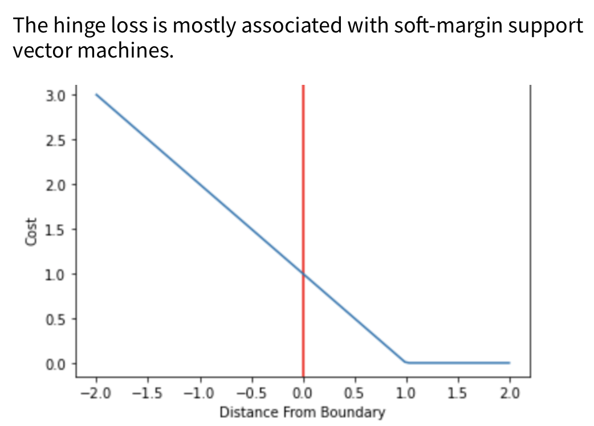
PolyLoss
- Proposed in PolyLoss: A Polynomial Expansion Perspective of Classification Loss Functions by Leng et al. in 2022.
- Cross-entropy loss and focal loss are the most common choices when training deep neural networks for classification problems.
- Generally speaking, however, a good loss function can take on much more flexible forms, and should be tailored for different tasks and datasets.
- PolyLoss is a generalized form of Cross Entropy loss.
- The paper proposes a framework to view and design loss functions as a linear combination of polynomial functions, motivated by how functions can be approximated via Taylor expansion. Under polynomial expansion, focal loss is a horizontal shift of the polynomial coefficients compared to the cross-entropy loss.
- Motivated by this new insight, they explore an alternative dimension, i.e., vertically modify the polynomial coefficients.
Generalized End-to-End Loss
- Proposed in Generalized End-to-End Loss for Speaker Verification by Wan et al. in ICASSP 2018.
- GE2E makes the training of speaker verification models more efficient than our previous tuple-based end-to-end (TE2E) loss function.
- Unlike TE2E, the GE2E loss function updates the network in a way that emphasizes examples that are difficult to verify at each step of the training process.
- Additionally, the GE2E loss does not require an initial stage of example selection.
Additive Angular Margin Loss
- Proposed in ArcFace: Additive Angular Margin Loss for Deep Face Recognition by Deng et al. in 2018.
- AAM has been predominantly utilized in for face recognition but has recently found applications in other areas such as speaker verification.
- One of the main challenges in feature learning using Deep Convolutional Neural Networks (DCNNs) for large-scale face recognition is the design of appropriate loss functions that enhance discriminative power.
- Centre loss penalises the distance between the deep features and their corresponding class centres in the Euclidean space to achieve intra-class compactness.
- SphereFace assumes that the linear transformation matrix in the last fully connected layer can be used as a representation of the class centres in an angular space and penalises the angles between the deep features and their corresponding weights in a multiplicative way.
- Recently, a popular line of research is to incorporate margins in well-established loss functions in order to maximise face class separability.
- Additive Angular Margin (AAM) Loss (ArcFace) obtains highly discriminative features with a clear geometric interpretation (better than other loss functions) due to the exact correspondence to the geodesic distance on the hypersphere.
- ArcFace consistently outperforms the state-of-the-art and can be easily implemented with negligible computational overhead. We release all refined training data, training codes, pre-trained models and training logs, which will help reproduce the results in this paper.
-
Specifically, the proposed ArcFace \(\cos(\theta + m)\) directly maximises the decision boundary in angular (arc) space based on the L2 normalised weights and features.
\[-\frac{1}{N} \sum_{i=1}^{N} \log \frac{e^{S *\left(\cos \left(\theta_{y_{i}}+m\right)\right)}}{e^{s *\left(\cos \left(\theta_{y_{i}}+m\right)\right)}+\sum_{j=1, j \neq y_{i}}^{n} e^{s * \cos \theta_{j}}}\]- where,
- \(\theta_{j}\) is the angle between the weight \(W_{j}\) and the feature \(x_{i}\).
- \(s\): feature scale, the hypersphere radius.
- \(m\): angular margin penalty.
- where,
Dice Loss
- Proposed in Rethinking Dice Loss for Medical Image Segmentation by Zhao et al. in ICDM 2020.
- Dice loss originates from Sørensen–Dice coefficient, which is a statistic developed in 1940s to gauge the similarity between two samples.
- It was brought to computer vision community by Milletari et al. in 2016 for 3D medical image segmentation.
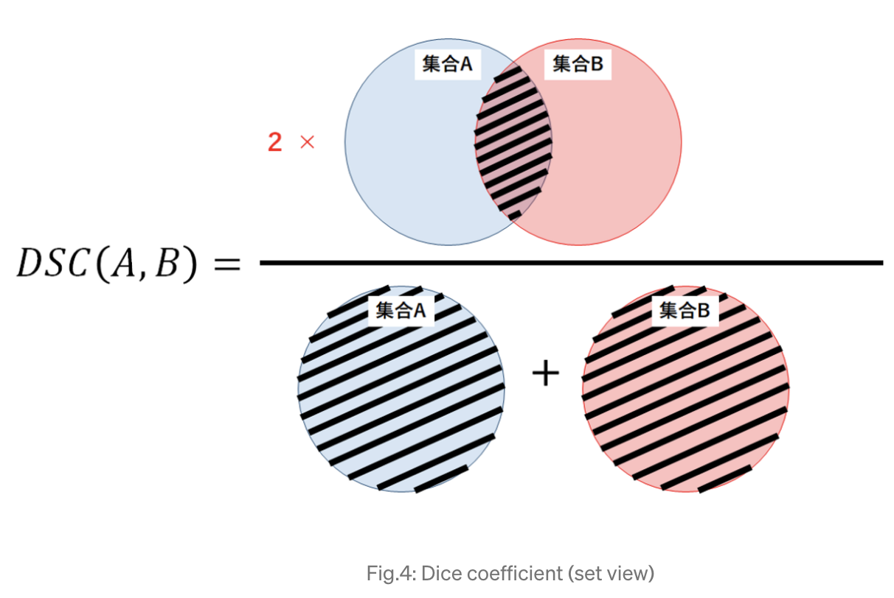
- The image above another view of the Dice coefficient mentioned above, from the perspective of set theory, in which the Dice coefficient (DSC) is a measure of overlap between two sets.
- For example, if two sets A and B overlap perfectly, DSC gets its maximum value to 1. Otherwise, DSC starts to decrease, getting to its minimum value to 0 if the two sets don ‘t overlap at all.
- Therefore, the range of DSC is between 0 and 1, the larger the better. Thus we can use 1-DSC as Dice loss to maximize the overlap between two sets.
Summary
- For classification problems, cross-entropy loss tends to be almost universally adopted.
- With focal cross-entropy, samples where the model is less confident is weighed more giving more focus on the “hard” samples to classify.
- The KL divergence is another information theoretic metric and can be less stable than cross-entropy in small batches due to the more fluctuating averages of the logs.
- The hinge loss is the original loss of the SVM algorithm. The squared hinge is simply the square of the hinge loss and the soft margin is simply a softer differentiable version of it.
Regression Loss Functions
Mean Absolute Error (MAE) / L1 Loss
- As the name suggests, MAE takes the average sum of the absolute differences between the actual and the predicted values.
- Regression problems may have variables that are not strictly Gaussian in nature due to the presence of outliers (values that are very different from the rest of the data).
-
Mean Absolute Error would be an ideal option in such cases because it does not take into account the direction of the outliers (unrealistically high positive or negative values).
\[M A E=\frac{1}{m} \sum_{i=1}^{m}\left|h\left(x^{(i)}\right)-y^{(i)}\right|\]- where,
- MAE: mean absolute error
- \(\mathrm{m}\): number of samples
- \(x^{(i)}\): \(i^{th}\) sample from dataset
- \(h\left(x^{(i)}\right)\): prediction for i-th sample (thesis)
- \(y^{(i)}\): ground truth label for \(\mathrm{i}\)-th sample
- A quick note here on L1 and L2, these are both used for regularization.
- L1 Loss Function is used to minimize the error which is the sum of the all the absolute differences between the true value and the predicted value.
- L1 is not affected by outliers and thus is preferrable if the dataset contains outliers.
- where,
Mean Squared Error (MSE) / L2 Loss
-
Formally, the Mean Squared Error (MSE) is given by,
\[M S E=\frac{1}{m} \sum_{i=1}^{m}\left(y^{(i)}-\hat{y}^{(i)}\right)^{2}\]- where,
- \(\mathrm{m}\): number of samples
- \(y^{(i)}\): ground truth label for i-th sample
- \(\hat{y}^{(i)}\): predicted label for i-th sample
- Mean Squared Error is the average of the squared differences between the actual and the predicted values.
- L2 Loss Function is used to minimize the error which is the sum of the all the squared differences between the true value and the predicted value. It is also the more preferred loss function compared to L1.
- However, when outliers are present in the dataset, L2 will not perform as well because the squared differences will lead to a much larger error.
- where,
Why is MSE not used for Binary Classification?
- First, using MSE means that we assume that the underlying data has been generated from a normal distribution (a bell-shaped curve). In Bayesian terms, this means we assume a Gaussian prior. While in reality, a dataset that can be classified into two categories (i.e., binary) is usually not from a normal distribution but a Bernoulli distribution.
- Secondly, the MSE function is non-convex for binary classification.
- As a reminder, a function is non-convex if the function is not a convex function. Non-convex functions are those functions that have many minimum points, in the form of local and global minimum points. The following figure (source) shows the difference between convex and non-convex functions.
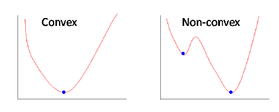
- Note that the loss functions that are applied in the context of machine learning models are convex functions, while those applied in the context of neural networks are non-convex functions.
- Put simply, if a binary classification model is trained with the MSE cost function, it is not guaranteed to minimize the cost function. This is because MSE function expects real-valued inputs in range \((-\infty, \infty)\), while binary classification models outputs discrete probabilities in range \((0,1)\) through the sigmoid/logistic function.
- Why Using Mean Squared Error (MSE) Cost Function for Binary Classification is a Bad Idea? offers a great overview of this topic.
Root Mean Squared Error (RMSE)
- Root Mean Squared Error (RMSE) is a standard way to measure the error of a model in predicting quantitative data. It represents the square root of the second sample moment of the differences between predicted values and observed values or the quadratic mean of these differences. These deviations are called residuals when the calculations are performed over the data sample that was used for estimation, and they are called errors (or prediction errors) when calculated out-of-sample. RMSE is commonly used in climatology, forecasting, and regression analysis to verify experimental results.
-
The RMSE of an estimator \(\hat{\theta}\) with respect to an estimated parameter \(\theta\) is defined as the square root of the mean square error:
\[\text{RMSE}(\hat{\theta}) = \sqrt{\text{MSE}(\hat{\theta})}\]- where MSE is the Mean Squared Error, given by:
- where, \(\hat{\theta}_i\) is the predicted value, \(\theta_i\) is the observed value, and \(n\) is the number of observations.
Normalized Mean Absolute Error (NMAE)
- Normalized Mean Absolute Error (NMAE) is another measure of prediction accuracy in a regression analysis. It is a normalized version of the Mean Absolute Error (MAE), which scales the error to make it relative, rather than absolute. This normalization can be done in several ways, such as by dividing by the range of the data or the mean of the observed values, making the NMAE more interpretable, especially when comparing across different datasets.
-
The NMAE is calculated as:
\[\text{NMAE} = \frac{1}{\text{norm}} \cdot \frac{1}{n} \sum_{i=1}^n \|\hat{\theta}_i - \theta_i\|\]where:
-
$$ \hat{\theta}_i - \theta_i $$ is the absolute error for each prediction, - \(n\) is the number of observations,
- and \(\text{norm}\) is the normalization factor, which could be, for example, the range of \(\theta\) (i.e., \(\text{max}(\theta) - \text{min}(\theta)\)) or the mean of \(\theta\) (i.e., \(\text{mean}(\theta)\)).
- The choice of normalization factor depends on the specific context and requirements of the analysis.
-
Huber Loss (Smooth L1 Loss / Smooth Mean Absolute Error)
- Huber loss is a loss function used in regression, that is less sensitive to outliers in data than the squared error loss.
- Huber loss is the combination of MSE and MAE. It takes the good properties of both the loss functions by being less sensitive to outliers and differentiable at minima.
- When the error is smaller, the MSE part of the Huber is utilized and when the error is large, the MAE part of Huber loss is used.
- A new hyper-parameter \(\delta\) is introduced which tells the loss function where to switch from MSE to MAE. Additional \(\delta\) terms are introduced in the loss function to smoothen the transition from MSE to MAE.
-
The Huber loss function describes the penalty incurred by an estimation procedure \(f\). Huber loss defines the loss function piecewise by:
\[L_{\delta}(a)= \begin{cases}\frac{1}{2} a^{2} & \text { for }|a| \leq \delta \\ \delta \cdot\left(|a|-\frac{1}{2} \delta\right), & \text { otherwise }\end{cases}\]- where:
- \(L_{\delta}(a)\) is the Huber loss for a given error \(a\) (which can be the difference between the predicted value and the actual value).
- \(\delta\) is a threshold parameter that defines the limit where the loss changes from quadratic to linear.
- where:
-
For errors smaller than \(\delta\), the loss is quadratic, making it less sensitive to small errors (like mean squared error). For errors larger than \(\delta\), the loss becomes linear, which reduces the impact of large errors (like mean absolute error). This makes Huber loss robust to outliers.
- The above equation is quadratic for small values of \(a\), and linear for large values, with equal values and slopes of the different sections at the two points where \(\|a\|=\delta\). The variable a often refers to the residuals, that is to the difference between the observed and predicted values \(a=y-f(x)\), so the former can be expanded to:
- The below diagram (source) compares Huber loss with squared loss and absolute loss:
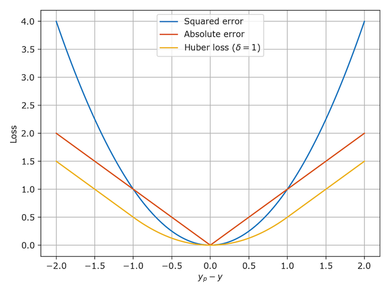
Asymmetric Huber loss
- Asymmetric Huber loss is a variation of the traditional Huber loss, designed to handle asymmetry in errors differently. In standard Huber loss, the loss function behaves like mean squared error for small errors and like mean absolute error for large errors. The asymmetric version introduces a way to handle overestimations and underestimations differently by applying different thresholds or scaling factors to positive and negative errors. This is particularly useful in scenarios where the cost of overestimating is different from the cost of underestimating, such as in ETA predictions where overestimation and underestimation of time may have different implications.
-
The equation for asymmetric Huber loss, which adjusts differently for overestimation and underestimation, can be written as follows:
\[L_{\delta}(a) = \begin{cases} \frac{1}{2}a^2 & \text{for } |a| \leq \delta, \\ \delta\left(|a| - \frac{1}{2}\delta\right) & \text{for } a > \delta, \\ \alpha\delta\left(|a| - \frac{1}{2}\delta\right) & \text{for } a < -\delta. \end{cases}\]- where:
- \(a\) is the prediction error (predicted value minus actual value).
- \(\delta\) is a threshold defining where the loss function shifts from quadratic to linear.
- \(\alpha\) is an asymmetry parameter that scales the loss differently for underestimations compared to overestimations.
- where:
- This modification allows the loss function to weigh overestimations and underestimations differently, which can be crucial in scenarios where these have different impacts.
Summary
- When it comes to regression problems, the Huber and Smooth L1 losses are the best of both worlds between MSE and MAE being differentiable at 0 and limiting the weight of outliers for large values. The LogCosh has the same advantage, having a similar shape to the Huber one.
- The mean absolute percentage error and the mean squared logarithmic error greatly mitigate the effects of outliers.
- Poisson regression is widely used for count targets that can only be positive.
Ranking Loss
- Ranking loss goes by many names as mentioned by (source):
- Ranking loss: This name comes from the information retrieval field, where we want to train models to rank items in an specific order.
- Margin Loss: This name comes from the fact that these losses use a margin to compare samples representations distances.
- Contrastive Loss: Contrastive refers to the fact that these losses are computed contrasting two or more data points representations. This name is often used for Pairwise Ranking Loss, but I’ve never seen using it in a setup with triplets.
- Triplet Loss: Often used as loss name when triplet training pairs are employed.
- Hinge loss: Also known as max-margin objective. It’s used for training SVMs for classification. It has a similar formulation in the sense that it optimizes until a margin. That’s why this name is sometimes used for Ranking Losses.
- Ranking loss functions are commonly used in machine learning tasks where the goal is to learn a ranking or similarity between instances. Here, we will discuss three popular ranking loss functions: margin ranking loss, soft pairwise loss, and pairwise logistic loss.
-
“Ranking Losses functions are very flexible in terms of training data: We just need a similarity score between data points to use them. That score can be binary (similar / dissimilar). As an example, imagine a face verification dataset, where we know which face images belong to the same person (similar), and which not (dissimilar). Using a Ranking Loss function, we can train a CNN to infer if two face images belong to the same person or not.
- To use a Ranking Loss function we first extract features from two (or three) input data points and get an embedded representation for each of them. Then, we define a metric function to measure the similarity between those representations, for instance euclidian distance. Finally, we train the feature extractors to produce similar representations for both inputs, in case the inputs are similar, or distant representations for the two inputs, in case they are dissimilar. We don’t even care about the values of the representations, only about the distances between them. However, this training methodology has demonstrated to produce powerful representations for different tasks.” (source)
Multiple Negative Ranking Loss
- Proposed in Efficient Natural Language Response Suggestion for Smart Reply by Henderson et al. from Google in 2017.
- Multiple Negative Ranking (MNR) Loss is a great loss function if you only have positive pairs, for example, only pairs of similar texts like pairs of paraphrases, pairs of duplicate questions, pairs of
(query, response), or pairs of(source_language, target_language). - This loss function works great to train embeddings for retrieval setups where you have positive pairs (e.g.
(query, relevant_doc)) as it will samplen-1negative docs in each batch randomly.The performance usually increases with increasing batch sizes. - This is because with MNR loss, we drop all rows with neutral or contradiction labels — keeping only the positive entailment pairs (source).
- Models trained with MNR loss outperform those trained with softmax loss in high-performing sentence embeddings problems.
- Below is a code sample referenced from sbert.net:
from sentence_transformers import SentenceTransformer, losses, InputExample
from torch.utils.data import DataLoader
model = SentenceTransformer('distilbert-base-uncased')
train_examples = [InputExample(texts=['Anchor 1', 'Positive 1']),
InputExample(texts=['Anchor 2', 'Positive 2'])]
train_dataloader = DataLoader(train_examples, shuffle=True, batch_size=32)
train_loss = losses.MultipleNegativesRankingLoss(model=model)
- For more, please refer Next-Gen Sentence Embeddings with Multiple Negatives Ranking Loss and SBert MNR Loss.
Soft Pairwise Loss
- Soft pairwise loss is another ranking loss function that aims to learn a similarity ranking between instances. It assigns higher scores to similar instances and lower scores to dissimilar instances while considering the pairwise relationships between instances. The soft pairwise loss can be defined as:
- where:
- \(\mathcal{L}_{\text{soft-pairwise}}\) is the soft pairwise loss.
- \(s_{i}\) is the score for instance \(i\).
- \(y_{i}\) is the label indicating the similarity (1) or dissimilarity (-1) of instance \(i\).
- The soft pairwise loss encourages similar instances to have higher scores than dissimilar instances, and it penalizes large score differences between instances of different labels.
Pairwise Logistic Loss
- Pairwise logistic loss is a ranking loss function commonly used in binary classification tasks where instances need to be ranked based on their likelihood of belonging to a certain class. It considers pairs of instances and encourages the model to assign higher probabilities to positive instances than negative instances. The pairwise logistic loss can be defined as:
- where:
- \(\mathcal{L}_{\text{pairwise-logistic}}\) is the pairwise logistic loss.
- \(s_{i}\) is the score for instance \(i\).
- \(y_{i}\) is the label indicating the positive (1) or negative (0) class of instance \(i\).
- The pairwise logistic loss encourages the model to assign higher scores to positive instances compared to negative instances and penalizes large score differences between instances of different labels.
- These ranking loss functions are used in various applications, including information retrieval, recommender systems, and natural language processing tasks, to learn effective rankings or similarities between instances based on their characteristics and labels.
- Both pairwise logistic loss and pairwise ranking loss are commonly used in tasks where instances need to be ranked or compared pairwise. However, they differ in their underlying formulations and objectives.
Pairwise Ranking Loss
- The terminology around “pairwise loss” and “ranking loss” can sometimes be a bit confusing, and there can be overlap between them. However, the key difference often lies in the structure of the learning task.
- Pairwise loss functions, such as the Triplet Loss, operate on pairs (or in this case, triplets) of samples at a time. The main objective of these loss functions is to learn a representation such that the distance between similar samples is less than the distance between dissimilar samples. The key focus is on the relative distances between individual samples or pairs of samples.
- On the other hand, ranking loss functions are typically concerned with the ordering of a set of items, often more than just pairs or triplets. They are used in tasks where items need to be sorted in some type of order, and the loss is typically related to the number of inversions in this order (i.e., pairs of items that are out of order).
- So, the Triplet Loss is generally considered a pairwise loss because it operates on triplets of samples, comparing the distances between an anchor sample and a positive sample (similar), and an anchor sample and a negative sample (dissimilar). It doesn’t directly consider the overall ranking among a larger set of samples, which is typically the concern of ranking loss functions.
- However, note that these categories are not mutually exclusive, and the exact classification can depend on the specific context and implementation. For instance, pairwise methods can be used as a part of a larger ranking problem, and some loss functions can be used both for pairwise comparisons and for ranking a set of items.
- Thus,ranking is the broader concept that encompasses the overall task of ordering or sorting items, while pairwise refers to a specific approach or technique used to compare and rank items based on pairwise comparisons. Pairwise methods are a common approach within the broader field of ranking.

- As illustrated by the image above (source), pairwise ranking loss is a loss function used to train models that can rank instances based on their similarity or preference. It is often employed in tasks where the goal is to learn a ranking or preference order among instances.
- There are different formulations of pairwise ranking loss, and one common approach is to use the hinge loss formulation. The pairwise ranking loss can be defined as:
- where:
- \(\mathcal{L}_{\text{pairwise-ranking}}\) is the pairwise ranking loss.
- \(s_{i}\) is the score for instance \(i\).
- \(y_{i}\) is the label indicating the preference or ranking position of instance \(i\).
- \(m\) is the margin that controls the desired separation between instances with different ranks.
- The pairwise ranking loss encourages the model to assign higher scores to instances that should be ranked higher and penalizes violations of the ranking order by imposing a margin constraint. It focuses on capturing the relative ranking positions of instances.
Triplet Loss
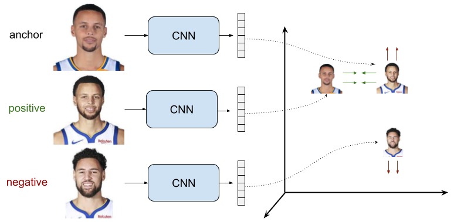
- As illustrated by the image above (source), triplet loss uses triplets of training samples instead of pairs.
- Proposed in FaceNet: A Unified Embedding for Face Recognition and Clustering by Schroff et al. in CVPR 2015.
- Triplet loss was orginally used to learn face recognition of the same person at different poses and angles.
- Triplet loss is a loss function for machine learning algorithms where a reference input (called anchor) is compared to a matching input (called positive) and a non-matching input (called negative).
- where,
- \(A\) is an anchor input.
- \(P\) is a positive input of the same class as \(A\).
- \(N\) is a negative input of a different class from \(A\).
- \(d\) is a function to measure the distance between these three samples.
- \(\alpha\) is a margin between positive and negative pairs.
- Consider the task of training a neural network to recognize faces (e.g. for admission to a high security zone).
- A classifier trained to classify an instance would have to be retrained every time a new person is added to the face database.
- This can be avoided by posing the problem as a similarity learning problem instead of a classification problem.
- Here the network is trained (using a contrastive loss) to output a distance which is small if the image belongs to a known person and large if the image belongs to an unknown person.
- However, if we want to output the closest images to a given image, we would like to learn a ranking and not just a similarity. A triplet loss is used in this case.
Margin Ranking Loss
- Proposed in Adaptive Margin Ranking Loss for Knowledge Graph Embeddings via a Correntropy Objective Function by Nayyeri et al. in 2019.
- As the name suggests, Margin Ranking Loss (MRL) is used for ranking problems.
- MRL calculates the loss provided there are inputs \(X1\), \(X2\), as well as a label tensor, \(y\) containing 1 or -1.
- When the value of \(y\) is 1 the first input will be assumed as the larger value and will be ranked higher than the second input.
- Similarly, if \(y=-1\), the second input will be ranked as higher. It is mostly used in ranking problems.
- Let’s look at the code for this below from analyticsindiamag:
first_input = torch.randn(3, requires_grad=True)
Second_input = torch.randn(3, requires_grad=True)
target = torch.randn(3).sign()
ranking_loss = nn.MarginRankingLoss()
output = ranking_loss(first_input, Second_input, target)
output.backward()
print('input one: ', first_input)
print('input two: ', Second_input)
print('target: ', target)
print('output: ', output)
- Ranking losses tend to be extensions of the pointwise ones, penalizing the losses when two samples are misaligned compared to the ground truth. The margin ranking, the soft pairwise hinge and the pairwise logistic losses are extensions of the hinge losses. However, the downside of ranking loss functions is that they are painfully slow to compute as the time complexity is \(O(N^2)\) where \(N\) is the number of samples within a batch. (source).
- Margin ranking loss is often used in tasks where instances need to be ranked based on their similarity or dissimilarity. It encourages the model to assign higher scores to similar instances and lower scores to dissimilar instances. The margin ranking loss can be defined as:
- where:
- \(\mathcal{L}_{\text{margin}}\) is the margin ranking loss,
- \(s_{i}^+\) is the score for a positive (similar) instance,
- \(s_{i}^-\) is the score for a negative (dissimilar) instance,
- \(m\) is the margin that defines the desired separation between positive and negative scores.
- The margin ranking loss encourages the positive instance scores to be higher than the negative instance scores by at least the margin $m$. This loss function is often used in tasks such as image retrieval and recommendation systems, where instances need to be ranked based on their similarity.
Contrastive Loss
- A quick note here to differentiate ranking vs contrastive loss:
- Contrastive learning is a method used in machine learning, specifically in self-supervised learning, to learn representations from unlabeled data. It operates on the principle of learning to tell apart different data samples (contrasting them) while pushing together, or attracting, transformations of the same data sample.
- Multiple Negative Ranking Loss: This can be considered a type of contrastive loss. In this method, a positive sample is contrasted with multiple negative samples to learn the representations.
- Soft Pairwise Loss and Pairwise Logistic Loss: While these are used for pairwise ranking, they are not typically categorized under contrastive learning. Pairwise ranking losses generally aim to optimize the rank order of items rather than learning representations that contrast different samples.
- However, the boundary isn’t always clear-cut, and it could depend on the specific context and use case. Some methods and loss functions can be considered as contrastive under certain conditions or when used in certain ways, even if they might not be traditionally categorized as such.
- For instance, the Triplet Loss, despite being a pairwise loss, is a contrastive loss function because it tries to learn representations that contrast an anchor sample with a positive sample (which should be similar) and a negative sample (which should be different). In this context, it’s doing a type of contrastive learning.
- Contrastive learning is a method used in machine learning, specifically in self-supervised learning, to learn representations from unlabeled data. It operates on the principle of learning to tell apart different data samples (contrasting them) while pushing together, or attracting, transformations of the same data sample.
-
Contrastive learning often involves pairs of samples: a positive pair that is similar, and a negative pair that is different. In this context, the contrastive loss can be defined as follows:
- Given:
- \(x_i^{+}\) as the positive sample similar to \(x_i\).
- \(x_i^{-}\) as the negative sample different from \(x_i\).
- \(D(.)\) as the distance function between two samples.
- \(m\) as the margin, a hyperparameter to tune.
- The Contrastive Loss (
L) for a single observation can be defined as:
- In this formula, the first term \(D(x_i, x_i^{+})\) pushes the positive pair to be closer (minimizes the distance), and the second term \(max(0, m - D(x_i, x_i^-))\) pushes the negative pair to be farther apart, but at least a distance of \(m\).
- For the overall loss, you typically average this over all observations in your dataset.
- Proposed in Dimensionality Reduction by Learning an Invariant Mapping by Hadsell et al. (with Yann LeCun) in IEEE CVPR 2006.
- Contrastive loss is a distance-based loss as opposed to more conventional error-prediction losses. This loss is used to learn embeddings in which two “similar” points have a low Euclidean distance and two “dissimilar” points have a large Euclidean distance.
- Contrastive learning is a very simple way to learn aligned semantic representations of multimodal data. For example, triplet margin loss was used in FaceNet and cosine embedding loss in CLIP. The hinge embedding loss is similar but we replace the cosine similarity with the Euclidean distance.
- Contrastive loss takes the output of the network for a positive example and calculates its distance to an example of the same class and contrasts that with the distance to negative examples.
- Two samples are either similar or dissimilar. This binary similarity can be determined using several approaches:
- In this work, the \(N\) closest neighbors of a sample in input space (e.g. pixel space) are considered similar; all others are considered dissimilar. (This approach yields a smooth latent space; e.g. the latent vectors for two similar views of an object are close)
- To the group of similar samples to a sample, we can add transformed versions of the sample (e.g. using data augmentation). This allows the latent space to be invariant to one or more transformations.
- We can use a manually obtained label determining if two samples are similar. (For example, we could use the class label. However, there can be cases where two samples from the same class are relatively dissimilar, or where two samples from different classes are relatively similar. Using classes alone does not encourage a smooth latent space.)
- Put simply, clusters of points belonging to the same class are pulled together in embedding space, while simultaneously pushing apart clusters of samples from different classes. In other words, contrastive loss calculates the distance between positive example (example of the same class) and negative example (example not of the same class). So loss can be expected to be low if the positive examples are encoded (in this embedding space) to similar examples and the negative ones are further away encoded to different representations. This behavior is illustrated in the image below:
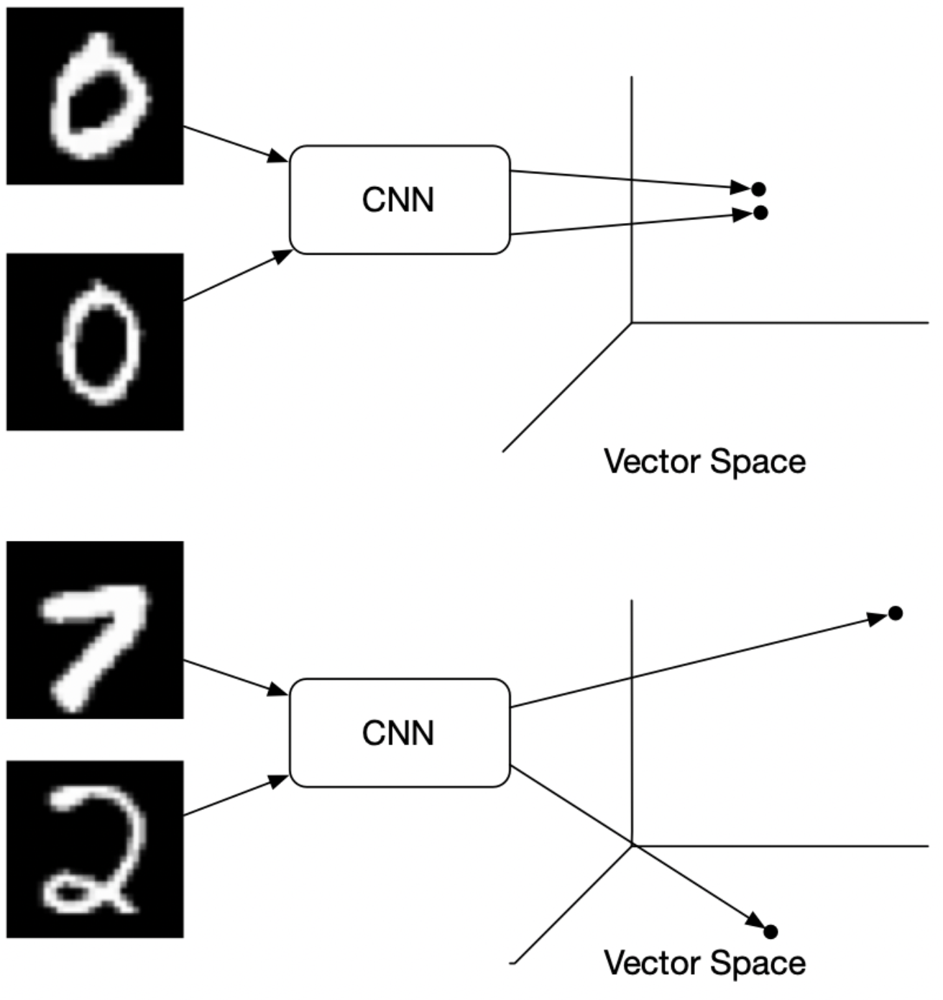
- Formally, if we consider \(\vec{X}\) as the input data and \(G_W(\vec{X})\) the output of a neural network, the interpoint distance is given by,
-
The contrastive loss is simply,
\[\begin{aligned} \mathcal{L}(W) &=\sum_{i=1}^P L\left(W,\left(Y, \vec{X}_1, \vec{X}_2\right)^i\right) \\ L\left(W,\left(Y, \vec{X}_1, \vec{X}_2\right)^i\right) &=(1-Y) L_S\left(D_W^i\right)+Y L_D\left(D_W^i\right) \end{aligned}\]- where \(Y=0\) when \(X_1\) and \(X_2\) are similar and \(Y=1\) otherwise, and \(L_S\) is a loss for similar points and \(L_D\) is a loss for dissimilar points.
-
More formally, the contrastive loss is given by,
\[\begin{aligned} &L\left(W, Y, \vec{X}_1, \vec{X}_2\right)= \\ &\quad(1-Y) \frac{1}{2}\left(D_W\right)^2+(Y) \frac{1}{2}\left\{\max \left(0, m-D_W\right)\right\}^2 \end{aligned}\]- where \(m\) is a predefined margin.
-
The gradient is given by the simple equations:
-
Contrastive Loss is often used in image retrieval tasks to learn discriminative features for images. During training, an image pair is fed into the model with their ground truth relationship: equals 1 if the two images are similar and 0 otherwise. The loss function for a single pair is:
\[y d^2+(1-y) \max (\operatorname{margin}-d, 0)^2\]- where \(d\) is the Euclidean distance between the two image features (suppose their features are \(f_1\) and \(f_2\)): \(d=\left \| f_1-f_2\right \|_{2}\). The \(margin\) term is used to “tighten” the constraint: if two images in a pair are dissimilar, then their distance should be at least \(margin\), or a loss will be incurred.
-
Shown below are the results from the paper which are quite convincing:
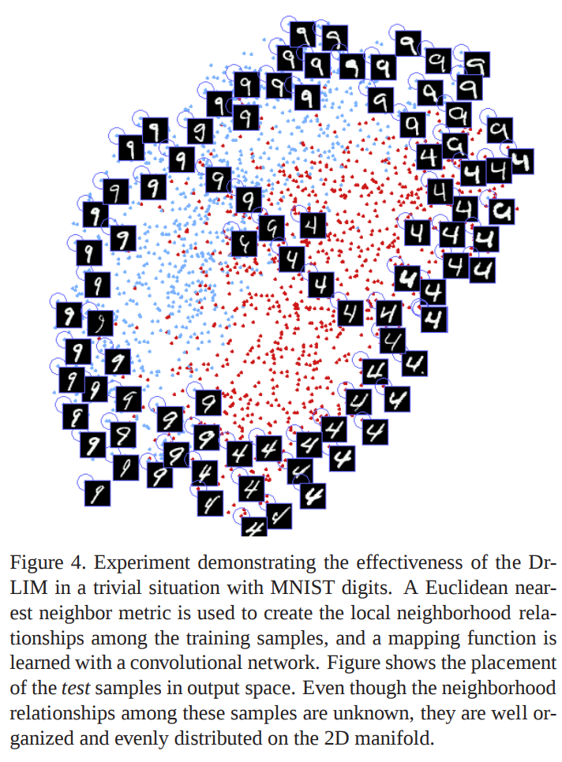
- Note that while this is one of the earliest of the contrastive losses, this is not the only one. For instance, the contrastive loss used in SimCLR is quite different.
InfoNCE Loss
- Proposed in Contrastive Predictive Coding by van den Oord et al. in 2018.
- InfoNCE, where NCE stands for Noise-Contrastive Estimation, is a type of contrastive loss function used for self-supervised learning.
- The InfoNCE loss, inspired by NCE, uses categorical cross-entropy loss to identify the positive sample amongst a set of unrelated noise samples.
Losses in Deep Learning-based Reinforcement Learning
- Deep Learning had a profound effect on Reinforcement Learning, allowing us to train models with high state and action dimensionalities.
- For Deep Q-learning, the loss can simply take the form of the MSE for the residuals of the Bellman equation. In the case of Policy gradient-based reinforcement learning algorithms, the loss is the cross-entropy of the action probabilities weighted by the Q-value.
- Deep learning has significantly impacted reinforcement learning, enabling the training of models with high-dimensional state and action spaces. In deep reinforcement learning, various loss functions are employed to train models effectively. Let’s explore two commonly used loss functions: Q-value loss and policy gradient loss.
Q-Value Loss
-
In deep Q-learning, the goal is to learn a Q-value function that estimates the expected cumulative rewards for different state-action pairs. The loss function used in Q-learning is the mean squared error (MSE) of the temporal difference (TD) error, which represents the difference between the current Q-value estimate and the target Q-value derived from the Bellman equation.
-
The Bellman equation can be written as follows:
- where:
- \(Q(s, a)\) is the Q-value for a given state-action pair.
- \(r\) is the immediate reward obtained after taking action \(a\) in state \(s\).
- \(\gamma\) is the discount factor that determines the importance of future rewards.
- \(s'\) is the next state after taking action \(a\) in state \(s\).
- The Q-value loss can be defined as:
- The Q-value loss drives the network to minimize the TD error, thus improving the accuracy of the Q-value estimates and ultimately leading to better action selection.
Policy Gradient Loss
-
Policy gradient methods directly optimize a policy function that maps states to actions without explicitly estimating Q-values. The objective is to maximize the expected cumulative rewards by updating the policy parameters using gradient ascent.
-
The loss function in policy gradient methods is typically the negative expected return (or a variant of it) weighted by a baseline, which helps reduce the variance of the gradient estimates. The return is defined as the sum of rewards obtained from a starting state following a policy. One common variant is the advantage function, which measures the advantage of taking a particular action over the average action value.
-
The policy gradient loss can be written as:
- where:
- \(\mathcal{L}_{\text{PG}}\) is the policy gradient loss.
- \(\pi(a_t\|s_t)\) is the probability of taking action \(a_t\) given state \(s_t\).
- \(\nabla_{\theta}\log \pi(a_t\|s_t)\) is the gradient of the log probability of the action.
- \(A(s_t, a_t)\) is the advantage function.
-
The policy gradient loss encourages actions with higher advantages to have higher probabilities, pushing the policy towards more favorable actions.
-
These loss functions, Q-value loss and policy gradient loss, are fundamental in training deep reinforcement learning models, enabling them to learn effective policies for complex decision-making tasks.
- Please note that there are various extensions and modifications to these loss functions based on specific algorithms and problem settings.
Further Reading
- PyTorch Losses Documentation
- SBERT: Losses
- Next-Gen Sentence Embeddings with Multiple Negatives Ranking Loss
- A Gentle Introduction to Cross-Entropy for Machine Learning
References
- Machine Learning Mastery
- ML CheatSheet
- Neptune.ai
- Section.ai
- After Academy
- Programmathically
- PapersWithCode: Focal Loss
- ArcFace Additive Angular Margin Loss for Deep Face Recognition
- Medium AnalyticsVidhya
- PolyLoss
- Generalized End-to-End Loss
- Wikipedia article on Huber loss
- Wikipedia article on Triplet loss
- Towards Data Science
- Papers With Code infoNCE
- Lilian Weng: Contrastive learning
- Dice Loss by Shuchen Du
- Margin Ranking Loss
- Margin Ranking Loss Official Paper
- Wikipedia: Kullback–Leibler divergence
- Kullback-Leibler Divergence Explained
- What is the difference Cross-entropy and KL divergence?
- Understanding Ranking Loss, Contrastive Loss, Margin Loss, Triplet Loss, Hinge Loss and all those confusing names
- Understanding Categorical Cross-Entropy Loss, Binary Cross-Entropy Loss, Softmax Loss, Logistic Loss, Focal Loss and all those confusing names
Citation
If you found our work useful, please cite it as:
@article{Chadha2020DistilledLossFunctions,
title = {Loss Functions},
author = {Chadha, Aman and Jain, Vinija},
journal = {Distilled AI},
year = {2020},
note = {\url{https://vinija.ai}}
}